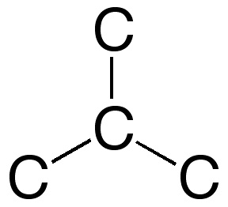
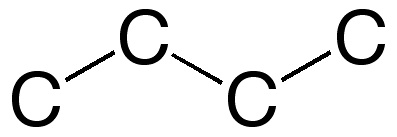
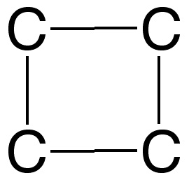

10. Estructura de Lewis de C4H6, 1,3-butadieno


1. Cuenta el número total de electrones (NT) de la capa de valencia para los átomos de la molécula.
Correcto. El número total, NT, de electrones
de valencia en esta molécula es 22.
|
|
No es correcto. Revisa los electrones de valencia de C e H.
|
|
No es correcto. Revisa los electrones de valencia de C e H.
|
2. Sabiendo que carece de enlace triples entre átomos de carbono, a la vista de la relación atómica C/H podemos deducir que el número de enlace dobles que tiene este compuesto es:
No es correcto. Se trataría de un hidrocarburo saturado
y su fórmula deberia ser del tipo CnH2n+2. Para n=4 debería tener fórmula C6H10
|
|
No es correcto. Se trataría de un hidrocarburo con un enlace doble
y su fórmula deberia ser del tipo CnH2n. Para n=4 debería tener fórmula C6H8
|
|
Correcto. Tiene fórmula tipo CnH2n-2
que corresponde a un hidrocarburo no saturado con dos enlaces dobles. (Tambien podria ser un hidrocarburo
con un enlace triple C-C, pero esa posibilidad está excluida en el enunciado.)
|
3. Elige el esqueleto de átomos de carbono:
|  | No es correcto. En este esqueleto hay un carbono rodeado
por otros tres átomos de carbono (terciario). No puede alojar dos enlaces dobles.
|
|  | Correcto. Este compuesto tiene un
esqueleto lineal
de átomos de carbono.
|
|  | No es correctao. Este esqueleto no está de acuerdo con la fórmula del compuesto.
|
4. Para completar los enlaces con los átomos de hidrógeno necesitas (electrones).
No es correcto. Hay que crear 6 enlaces para unir
con otros tantos átomos de hidrógeno
al esqueleto de carbonos. Ello requiere más electrones.
|
|
Correcto. Los 6 enlaces con otros tantos átomos
de hidrógeno requieren
12 electrones.
|
|
No es correcto. Hay que colocar 6 enlaces con 6 átomos de hidrógeno
en el esqueleto de carbonos. Ello requiere menos de 14 electrones.
|
5. Quedan 4 electrones sin colocar. ¿Dónde se situarán estos electrones para completar la capa de valencia de todos los átomos?
| Uno sobre cada átomo de carbono | No es correcto. Esto formaría cuatro radicales que no son
estables en compuestos de carbono.
|
| Dos sobre C1 y C4. | No es correcto Los átomos C2 y C3 no completarían el
octeto.
|
| Dos enlaces dobles C1-C2 y C3-C4. | Correcto Los cuatro átomos de carbono
completan el octeto y se forma un sistema de
dobles enlaces alternados.
|